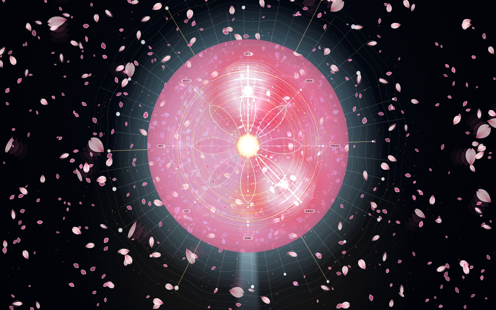
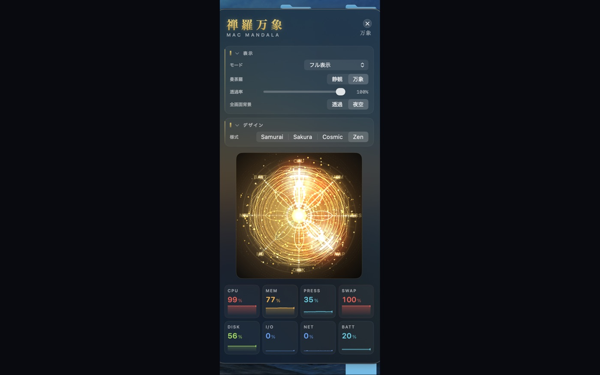
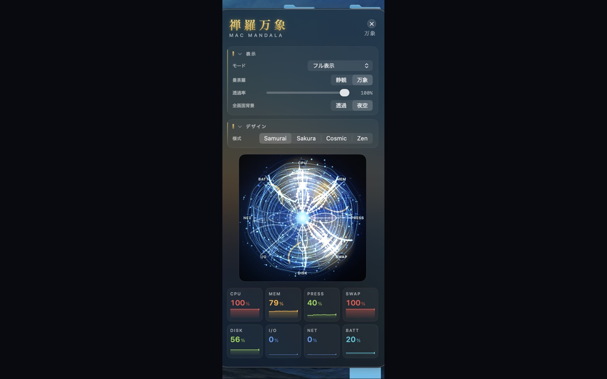
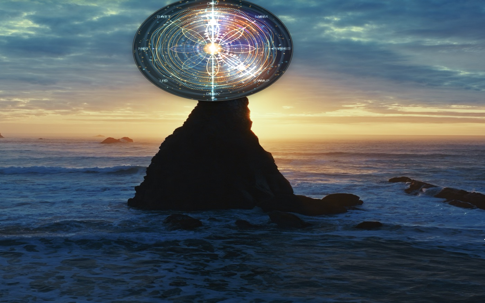

Zenrabansho — Mac Mandala

一 · 観 — SEEING
禅羅万象は、CPU・メモリ・ディスク・ネットワークの 4 リソースを 1 秒ごとにサンプリングし、 曼荼羅の「層」「花弁」「光線」へ写し取ります。数字を読むのではなく、 息遣いとして感じる。Activity Monitor の対極にある、瞑想のためのシステムモニターです。 CPU, memory, disk, and network — sampled every second, mapped to rings, petals, and rays. The opposite of Activity Monitor.
二 · 様式 — FOUR STYLES
アプリ内の「様式」切替で、曼荼羅は姿を変えます。Switch styles inside the app.



三 · 作法 — FOUR MODES
曼荼羅とメトリクスカード、ヘルプを一望。今日の調子を 1 秒で。Mandala + metric cards.
円形ウィンドウの純粋な可視化。机上の小さな宇宙。Pure visualization in a circular window.
デスクトップ背景として常時描画。離席中も Mac は呼吸し続ける。Wallpaper-level background.
透過率 1〜100% の半透明装飾。作業の邪魔をせず、気配だけ。Translucent overlay, opacity 1–100%.
メニューバーアイコンは 12 弁のロータス。CPU 負荷に応じて中心が脈打ちます。The menu-bar lotus pulses under CPU load.
四 · 無 — THREE ZEROS
Zero data collection
Zero external communication
Zero notifications
すべての処理は端末内で完結。App Sandbox・Hardened Runtime 有効。安心して常駐させられます。 Everything runs locally. Nothing is ever transmitted.
買い切り ¥1,100 / US$6.99 — サブスクリプションなし · no subscription